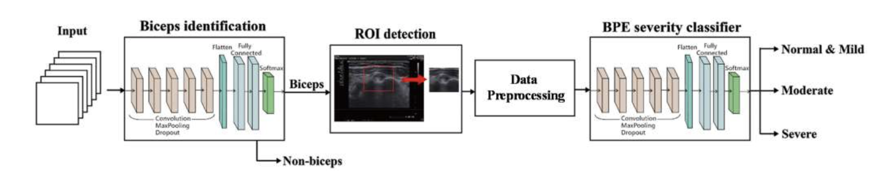

Introduction
Inflammation of the long head of the biceps tendon is a common cause of shoulder pain. Bicipital peritendinous effusion (BPE) is the most common biceps tendon abnormality and is related to various shoulder injuries. Physicians usually use ultrasound imaging to grade the inflammation severity of the long head of the biceps tendon. However, obtaining a clear and accurate ultrasound image is difficult for inexperienced attending physicians.
To reduce physicians' workload and avoid errors, an automated BPE recognition system was developed in this article for classifying inflammation into the following categories-normal and mild, moderate, and severe. An ultrasound image serves as the input in the proposed system; the system determines whether the ultrasound image contains biceps. If the image depicts biceps, then the system predicts BPE severity.
System Design
In this study, two crucial methods were used for solving problems associated with computer-aided detection. First, the faster regions with convolutional neural network (faster R-CNN) used to extract the region of interest (ROI) area identification to evaluate the influence of dataset scale and spatial image context on performance. Second, various CNN architectures were evaluated and explored. Model performance was analyzed by using various network configurations, parameters, and training sample sizes. The proposed system was used for three-class BPE classification and achieved 75% accuracy. The results obtained for the proposed system were determined to be comparable to those of other related state-of-the-art methods.
